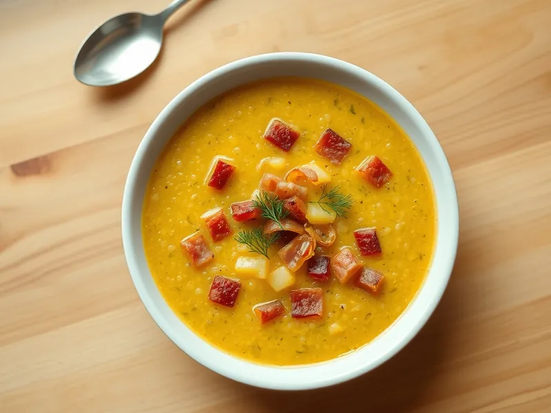

Кулеш с беконом и пшеном
Густая казацкая похлёбка из пшена и картофеля с жареным беконом и луком
45 мин5 порц.320 ккал на порциюБ 12 · Ж 15 · У 34Украинская кухня
Открыть в приложении: порции, таймеры, список покупок
Продукты на 5 порц.
- Пшено150 г
- Картофель3 шт
- Бекон150 г
- Лук репчатый1 шт
- Чеснок2 зуб.
- Укроп0,5 пучка
- Соль1 ч. л.
- Перец чёрный молотый1 щеп.
- Вода1800 мл
Как готовить
- Промойте пшено горячей водой несколько раз, пока вода не станет прозрачной.
- Вскипятите воду на сильном огне, всыпьте пшено и варите на среднем огне 10 минут.
- Добавьте картофель кубиками, посолите и варите 15 минут, пока картофель и пшено не станут мягкими.
- Нарежьте бекон полосками и обжарьте на сухой сковороде на среднем огне 5 минут, добавьте нарезанный лук и жарьте ещё 5 минут до золотистого цвета.
- Переложите бекон с луком и вытопленным жиром в кастрюлю, добавьте раздавленный чеснок и перец, варите 3 минуты.
- Посыпьте укропом и дайте постоять под крышкой 5 минут: кулеш станет густым.
Совет. Кулеш хорош на природе в котелке: традиционно его варят на костре с салом вместо бекона.